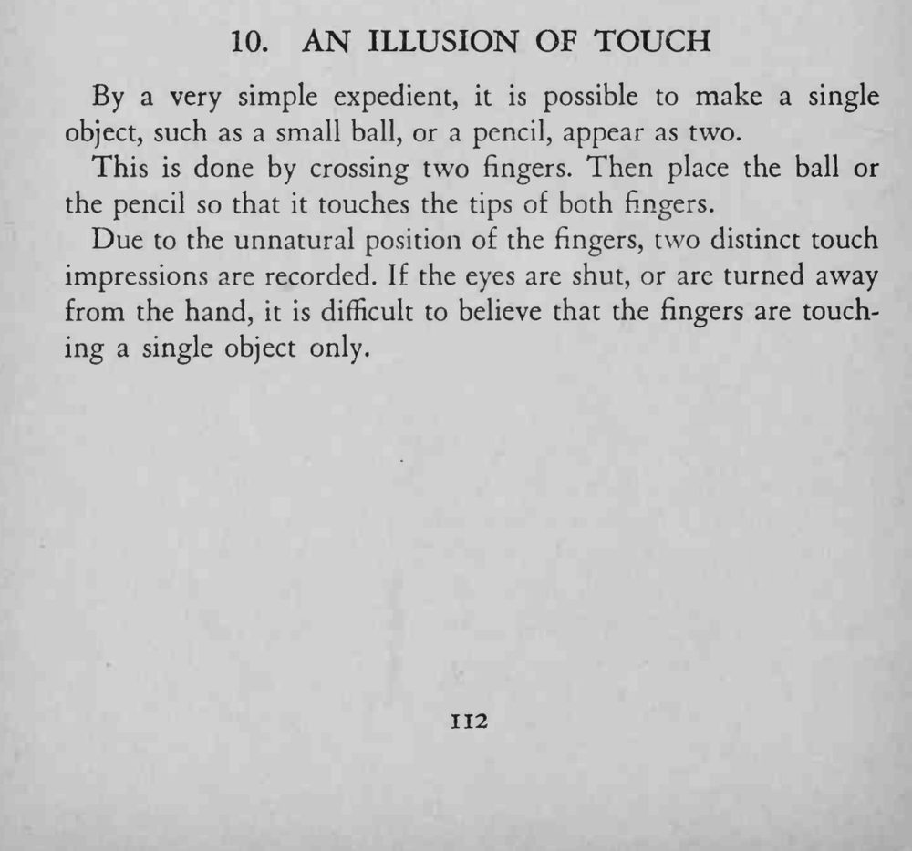
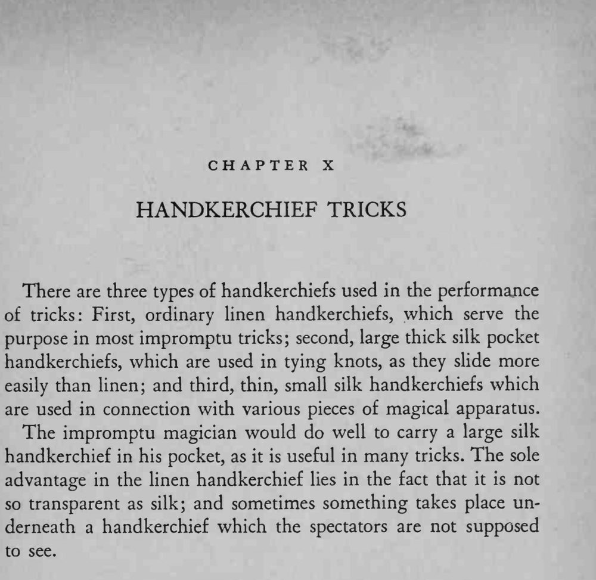

把一个小球或一支铅笔同时碰到两根交叉手指的指尖，闭眼去摸，会觉得手里有两件东西。
一定要让观众别看手、只凭触觉判断，错觉才成立。


By a very simple expedient, it is possible to make a single object, such as a small ball, or a pencil, appear as two. This is done by crossing two fingers. Then place the ball or the pencil so that it touches the tips of both fingers. Due to the unnatural position of the fingers, two distinct touch impressions are recorded. If the eyes are shut, or are turned away from the hand, it is difficult to believe that the fingers are touching a single object only. There are three types of handkerchiefs used in the performance of tricks: First, ordinary linen handkerchiefs, which serve the purpose in most impromptu tricks; second, large thick silk pocket handkerchiefs, which are used in tying knots, as they slide more easily than linen; and third, thin, small silk handkerchiefs which are used in connection with various pieces of magical apparatus. The impromptu magician would do well to carry a large silk handkerchief in his pocket, as it is useful in many tricks. The sole advantage in the linen handkerchief lies in the fact that it is not so transparent as silk; and sometimes something takes place underneath a handkerchief which the spectators are not supposed to see.